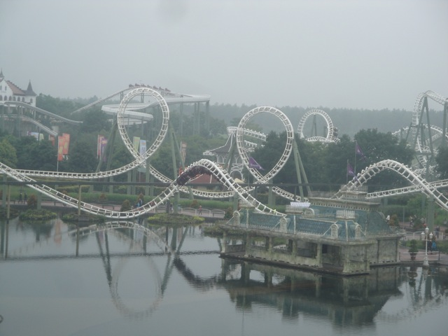
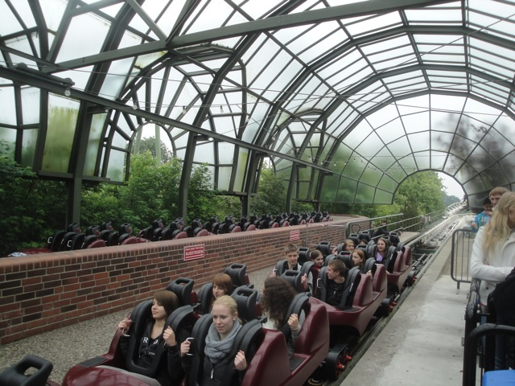

| |
Big Loop Review

We're here at Heide Park. Today's ride we'll be reviewing for you is Big Loop. The park's loopscrew. Apparently, this is a special custom model, but I don't see anything custom about it. It just looks like the same old loopscrew model with no originality to it at all. But whatever. Let's just get in the cars, pull down the OTSRs, and off we go. We roll around a turn and through some straight track before we roll up the lifthill. It's just an ordinary lift hill. Clank clank up, look around, get a nice view of Heide Park and the lake that Big Loop is resting on. We slowly crest the hill and BAM!! Down the first drop we go. There's nothing special about this first drop at all. But at least it's fun. So that's the good news. All that stands between us is a bunch of straight track. As we continously eat through the straight track, we then start to go through the vertical loops. The first vertical loop we go through is pretty forceful for a Vekoma Loopscrew. Surprisingly, it doesn't kill us. So, we go through a second loop. That ought to do the trick. Nope it just gives us some fun. I'm actually starting to enjoy this. We head up a small little hill that also sort of curves as we head through another turnaround. There's a nice SMACK here. But overall, it's still pretty good. And then, we head straight into the corkscrews. The corkscrews are fun. We then head up a curved hill and head straight into a...mid course brake? I don't ever remember this. Well, I guess this is what they were talking about when they mentioned that Big Loop is a custom model. But don't get your hopes up. You head down a small little drop. We then head into an upward helix and straight into the brake run. So really, it's the same mediocre ending in just a shinier package. And though I will admit that it's just an ordinary Vekoma Loopscrew, I will admit that this is one of the better ones and you can have a fun time on.
6/10
Location: Heide Park
Opened: 1983
Built by: Vekoma
Last Ridden: June 27, 2012
Big Loop Photos




|